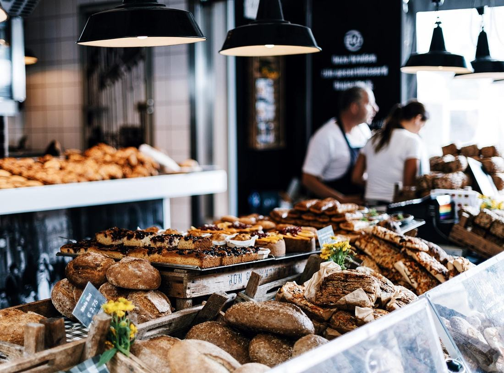

Temsilî fotoğraf · yayında kendi vitrininiz
Uncalı'nın fırını.
20 yıldır sabah altıda.
Taş fırın ekmeği, kol böreği, açma ve kişiye özel pasta. Yenilenen dükkânımızda her gün 06:00–21:30 açığız; Konyaaltı içinde evlere servis var, gel-al siparişte %15 indirim.
Bugün fırından çıkanlar
Her ürün tezgâha çıktığı saatle yazılır. "Bu sabah mı yapıldı?" sorusunun cevabı burada, kasada ve Google profilinde aynı.
| Ürün | Son çıkış | Bugünkü çıkışlar | Sonraki |
|---|
Saatler kasadaki sistemden ya da ustanın tek dokunuşuyla güncellenir. (Örnek düzen.)
Kişiye özel pasta
Pasta vitrini
Modeli seçin, kişi sayısını ve tarihi verin, üstüne yazılacak ismi yazın. Fiyat anında çıkar; sipariş WhatsApp'tan ustaya düşer.
Aklınızdaki model listede yok mu?
Fotoğrafını gönderin, usta fiyatını aynı gün bildirsin. Doğum günü, nişan, söz, baby shower.
Görüşünüz
Nasıldı? Google'a yazın.
Bu karekod kasada, masalarda ve paket poşetinde. Herkese aynı bağlantı açılır; iyi de olsa kötü de olsa her yorumu okuyor, hepsine adımızla cevap veriyoruz.
- Kasada güler yüz — eksik bulduğunuz bir şey varsa yazın, ekibe aynı gün iletilir.
- Üretim saati — tezgâhtaki her ürünün yanında artık çıkış saati var.
- Fiyat — tam liste yukarıda, sürpriz yok.
Adres & saatler
Uncalı Caddesi, No:2/A
Molla Yusuf Mh. Uncalı Cad. Sidney Apt. No:2/A
Konyaaltı / Antalya · Tel (0242) 227 35 25
360° görünüm
Gelmeden önce dükkânı görün
Parmağınızla çevirin; Uncalı Caddesi'ni ve girişimizi 360° gezin.
Görüntü: Google Street View